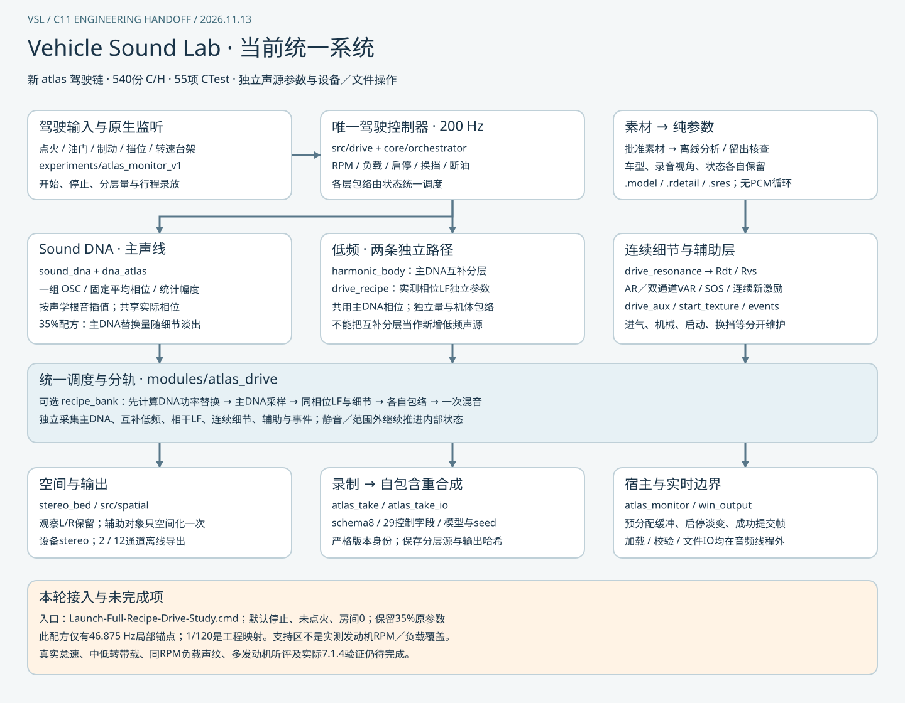

ENGINEERING HANDOFF · 2026-11-11
Vehicle Sound Lab
工程交接
在工程根目录双击 Launch-System.cmd，选择驾驶、DNA 监听、低频对照或交接资料。使用 Windows x64；此页也可离线浏览。
运行入口与听评范围
驾驶与录制可用
驾驶系统 0.20.0
启停、自动换挡、调参、分层与录制回放。实时立体声，离线可导出 7.1.4。默认 Original OSC，目标音色未获验收。
总入口另含驾驶回退 0.15.0。
固定情境听评通过
Sound DNA V1
固定相位的独立持续 OSC 监听，可换模型、微调音高和细节。已听评的是 V10 固定情境，两种合成声验证复用。
保留的未通过实验
低频轰鸣 V2
含四种录音视角，可调整比例与单独监听。宽谱候选听成风声，缺少发动机感。下一步提取与发动机转动同步的低频。
C 系统总图

点击打开原尺寸矢量图。独立监听与驾驶主线的连接状态标在图中。
关键试听
页面保留原试听方式。音频位于本地交接包；请先恢复相应证据，再回听。
构建与证据
安装 Visual Studio 2022 的 C++ 桌面开发组件（含 MSVC x64 和 Windows SDK）与 CMake 3.21+。从 PowerShell 执行 .\Build-System.ps1 构建、运行测试，再执行 .\Launch-System.cmd rebuilt 启动重建版本。回退 0.15.0 仅在本地交接包中可用。
按交付目录的「交接说明」恢复历史包、录音证据、全部渲染和分析依赖。历史报告中引用的分析文件、旧试听和快照清单所列文件需要相应的证据包；各包解压到同一工程根目录。源素材编号和使用限制见本地批准清单与分段目录。